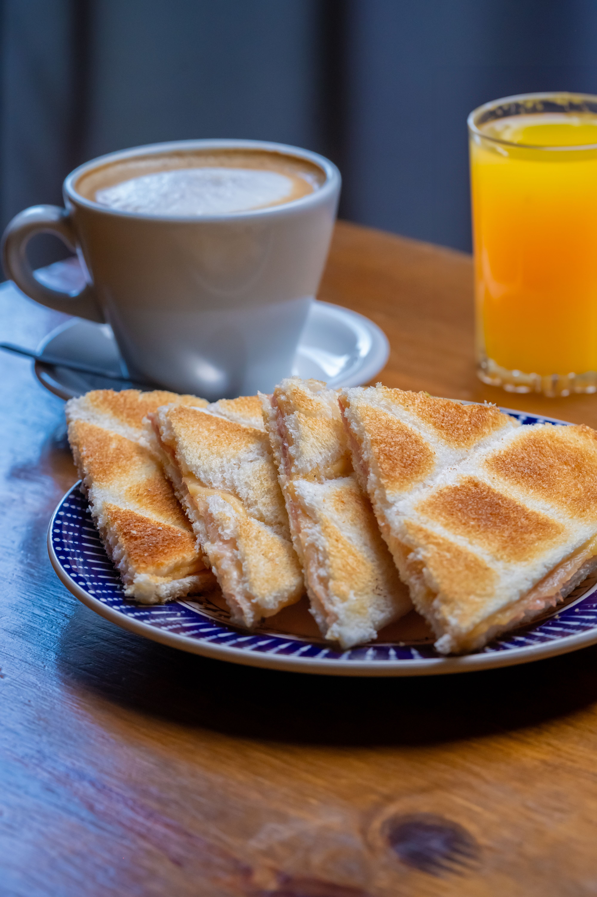
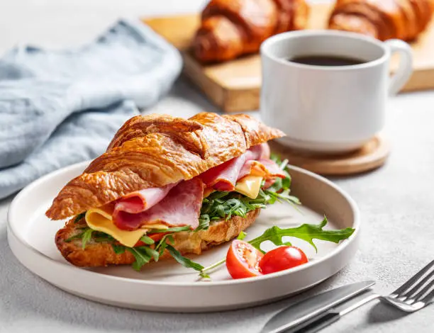

Cafe espresso
Cafe intenso y aromatico preparado al momento.
Descubri nuestras opciones de cafe, desayunos, dulces y bebidas.
Cafe intenso y aromatico preparado al momento.

Cafe suave con leche y una presentacion especial.

Una opcion refrescante para disfrutar del cafe.

Tostadas ideales para acompañar tu desayuno.

Una opcion clásica para acompañar el cafe.

Una propuesta completa para disfrutar sin apuro.

Dulces artesanales ideales para acompañar tu cafe.

Una opcion dulce para disfrutar en cualquier momento.

Una alternativa suave y calida para acompañar tu momento.